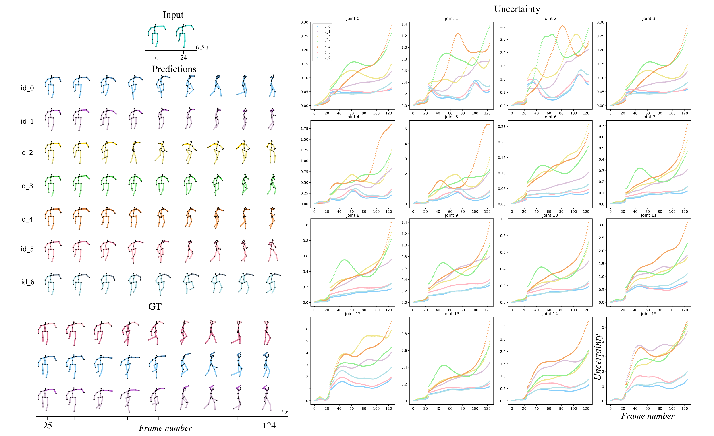
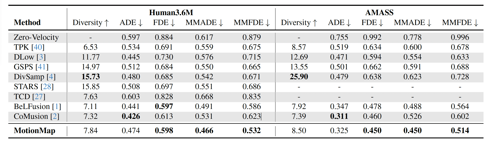

Representing Multimodality in Human Pose Forecasting
Reyhaneh Hosseininejad*, Megh Shukla*, Saeed Saadatnejad, Mathieu Salzmann, Alexandre Alahi
École Polytechnique Fédérale de Lausanne (EPFL), Swiss Data Science Centre (SDSC)
Figure: MotionMap uses heatmaps to depict the spatial distribution of possible motions, with local maxima indicating multiple plausible futures.
Human pose forecasting is inherently multimodal since multiple futures exist for an observed pose sequence. However, evaluating multimodality is challenging since the task is ill-posed. Therefore, we first propose an alternative paradigm to make the task well-posed. Next, while state-of-the-art methods predict multimodality, this requires oversampling a large volume of predictions. This raises key questions: (1) Can we capture multimodality by efficiently sampling fewer predictions? (2) Subsequently, which of the predicted futures is more likely for an observed pose sequence? We address these questions with MotionMap, a simple yet effective heatmap based representation for multimodality. We extend heatmaps to represent a spatial distribution over the space of all possible motions, where different local maxima correspond to different forecasts for a given observation. MotionMap can capture a variable number of modes per observation and provide confidence measures for different modes. Further, MotionMap allows us to introduce the notion of uncertainty and controllability over the forecasted pose sequence. Finally, MotionMap captures rare modes that are non-trivial to evaluate yet critical for safety. We support our claims through multiple qualitative and quantitative experiments using popular 3D human pose datasets: Human3.6M and AMASS, highlighting the strengths and limitations of our proposed method.
Figure: Overview of the MotionMap architecture showing the two-stage design with heatmap prediction and decoding.


MotionMap captures uncertainty across both the mode space and the forecasted sequences, offering meaningful confidence scores.
We visualize pose sequences predicted under different conditions to highlight how MotionMap captures realistic and smooth transitions.

MotionMap outperforms baselines on ADE, FDE, and their multimodal counterparts across Human3.6M and AMASS datasets.

Figure: Comparison of predicted and ground-truth multimodal heatmaps across observations.
@InProceedings{hosseininejad2025motionmap,
title = {MotionMap: Representing Multimodality in Human Pose Forecasting},
author = {Hosseininejad, Reyhaneh and Shukla, Megh and Saadatnejad, Saeed and Salzmann, Mathieu and Alahi, Alexandre},
booktitle = {Proceedings of the IEEE/CVF Conference on Computer Vision and Pattern Recognition (CVPR)},
year = {2025},
publisher = {IEEE/CVF}
}